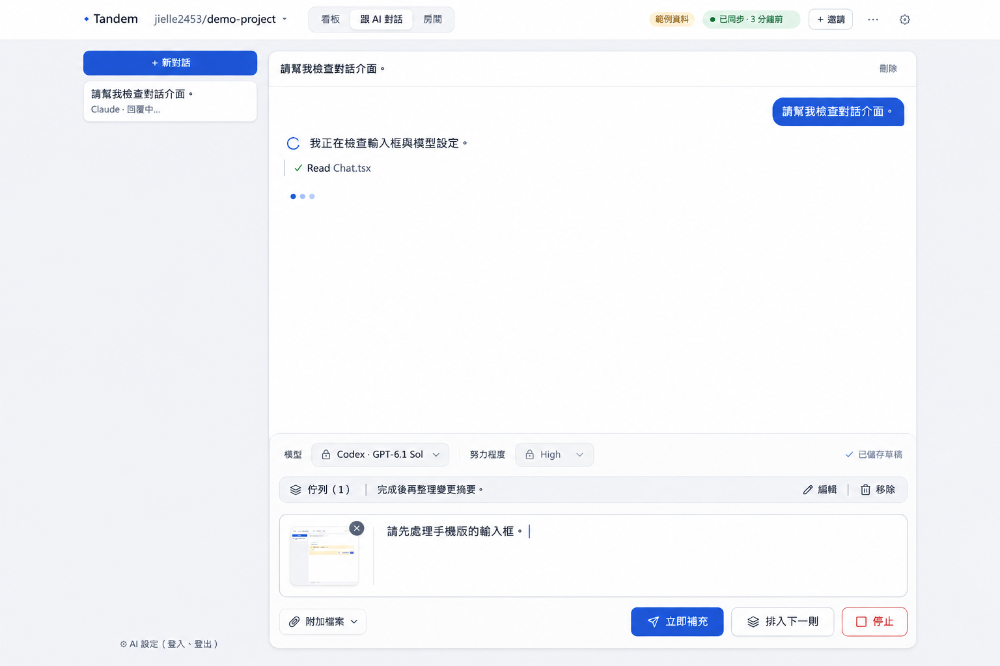
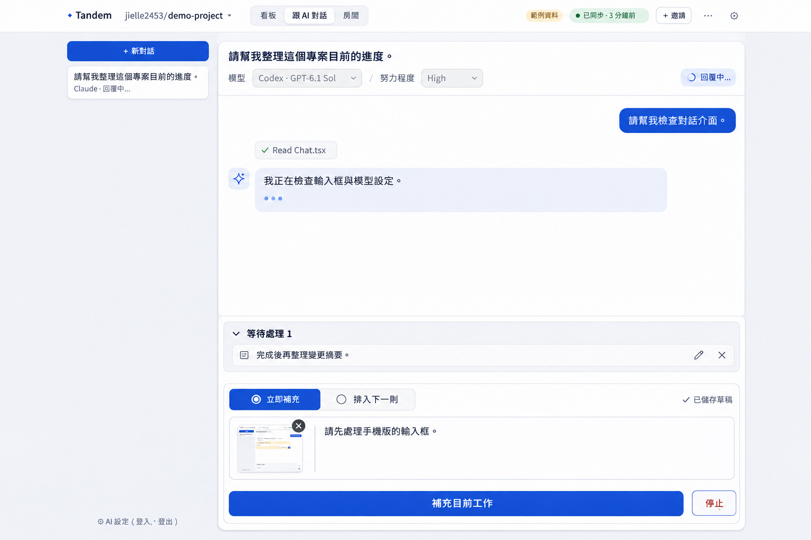
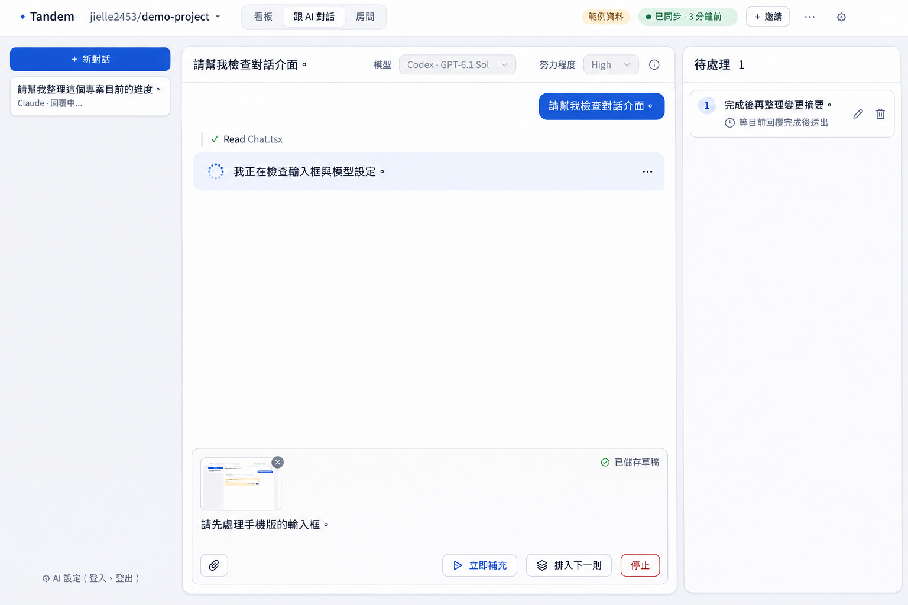

<!doctype html>
<html lang="zh-Hant">
<meta charset="utf-8">
<meta name="viewport" content="width=device-width,initial-scale=1">
<title>Tandem 三版參考圖</title>
<style>body{margin:24px;font:16px/1.6 system-ui,sans-serif;color:#1a2130;background:#f3f4f7}main{max-width:1440px;margin:auto}nav{display:flex;gap:24px;flex-wrap:wrap}a{color:#2259d6}section{margin:32px 0 56px;scroll-margin-top:16px}img{display:block;width:100%;height:auto;background:white}h1{font-size:24px}h2{font-size:20px}p{margin:8px 0}</style>
<main>
<h1>Tandem 三版參考圖</h1>
<p>設計稿，尚未實作。點圖片可開啟原圖。</p>
<nav><a href="#a">A：輸入區集中（建議）</a><a href="#b">B：模型置頂、先選模式</a><a href="#c">C：獨立等待側欄</a></nav>
<section id="a"><h2>A：控制集中在輸入區（建議）</h2><a href="chat-a.png"></a></section>
<section id="b"><h2>B：模型置頂、先選送出模式</h2><a href="chat-b.png"></a></section>
<section id="c"><h2>C：待處理訊息獨立側欄</h2><a href="chat-c.png"></a></section>
</main></html>
